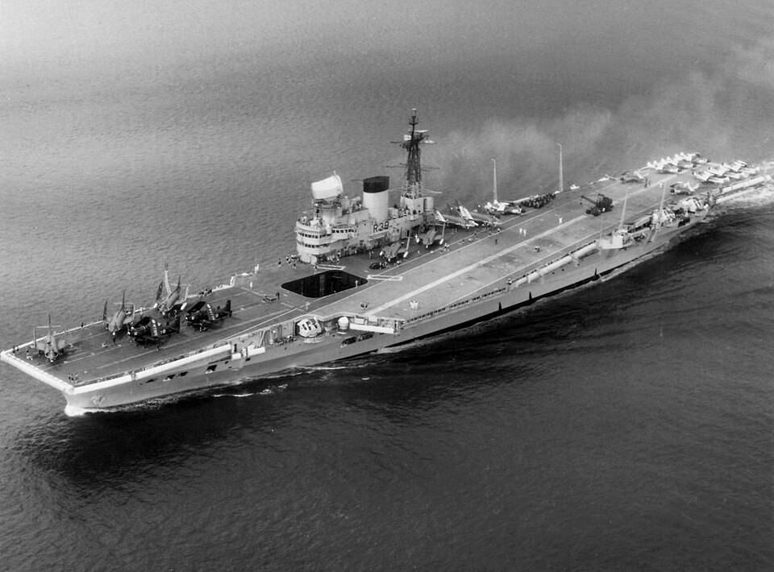

HMS Victorious
Portaviones de Reino Unido, perteneciente a la clase Illustrious. Participó en la persecución del Bismarck, convoyes árticos y ataques contra el Tirpitz.

Diseño y función
HMS Victorious pertenecía a la clase Illustrious. Portaviones de escuadra para operaciones aeronavales. Sus prestaciones se detallan en la tabla técnica, con las fechas o condiciones disponibles en la referencia.
Operaciones y trayectoria
Participó en la persecución del Bismarck, convoyes árticos y ataques contra el Tirpitz. También cooperó con la US Navy y combatió contra Japón antes de una profunda reconstrucción en la posguerra.
Destino final y conservación
Retirado definitivamente en 1968 y desguazado en 1969. La reconstrucción modificó de forma importante su cubierta, sensores y silueta.